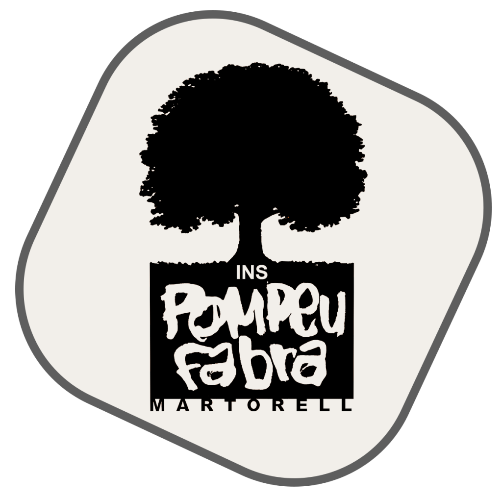

<!DOCTYPE html>
<html lang="ca">
<link rel="icon" type="image/png" href="logo.jpg">
<head>
  <meta charset="UTF-8" />
  <meta name="viewport" content="width=device-width, initial-scale=1.0" />
  <title>Web de Carla</title>
  <link href="https://fonts.googleapis.com/css2?family=Poppins:wght@400;600&display=swap" rel="stylesheet" />
  <style>
    :root {
      --blue-dark: #023e8a;
      --blue-mid: #0077b6;
      --blue-light: #90e0ef;
      --blue-extra-light: #e0f7fa;
      --white: #ffffff;
      --shadow: rgba(0, 119, 182, 0.15);
    }

    body {
      margin: 0;
      font-family: 'Poppins', sans-serif;
      background: linear-gradient(to bottom, var(--blue-extra-light), var(--white));
      color: var(--blue-dark);
    }

    header {
      background: linear-gradient(to right, var(--blue-dark), var(--blue-mid));
      color: var(--white);
      padding: 1.2rem 2rem;
      display: flex;
      justify-content: space-between;
      align-items: center;
      box-shadow: 0 3px 10px var(--shadow);
    }

    .logo {
      font-size: 1.8rem;
      font-weight: bold;
    }

    .logo a {
  color: white; /* o un altre color amb contrast */
  font-size: 1.8rem;
  font-weight: bold;
  text-decoration: none;
}

  .logo a {
  opacity: 1;
}

    nav a {
      margin-left: 2rem;
      color: var(--white);
      text-decoration: none;
      font-weight: 600;
      transition: color 0.3s ease;
    }

    nav a:hover {
      color: var(--white);
    }

    main {
      max-width: 960px;
      margin: 2.5rem auto;
      padding: 2rem;
      background: var(--white);
      border-radius: 14px;
      box-shadow: 0 8px 20px var(--shadow);
    }

    h1 {
      font-size: 2.5rem;
      text-align: center;
      color: var(--blue-mid);
      margin-bottom: 1.5rem;
    }

    p {
      font-size: 1.1rem;
      line-height: 1.7;
      margin-bottom: 1.5rem;
    }

    a {
      color: var(--blue-mid);
      font-weight: bold;
      text-decoration: none;
    }

    a:hover {
      text-decoration: underline;
    }

    .projectes {
      display: grid;
      gap: 1.2rem;
    }

    .projecte {
      background: var(--blue-light);
      padding: 1rem 1.5rem;
      border-left: 5px solid var(--blue-dark);
      border-radius: 10px;
      box-shadow: 0 4px 10px var(--shadow);
      transition: transform 0.3s ease, background 0.3s ease;
    }

    .projecte:hover {
      transform: translateY(-5px);
      background: #caf0f8;
    }

    .emoji {
      margin-right: 0.5rem;
    }

    @media (max-width: 600px) {
      header {
        flex-direction: column;
        align-items: flex-start;
      }

      nav {
        margin-top: 1rem;
      }

      nav a {
        display: block;
        margin: 0.4rem 0;
      }

      main {
        margin: 1rem;
      }
    }

    .dropdown {
  position: relative;
  display: inline-block;
}

.dropdown-content {
  display: none;
  position: absolute;
  background-color: var(--white);
  min-width: 160px;
  box-shadow: 0px 4px 8px rgba(0, 0, 0, 0.2);
  z-index: 1;
  border-radius: 6px;
  margin-top: 0.5rem;
}

.dropdown-content a {
  color: var(--blue-dark);
  padding: 10px 16px;
  text-decoration: none;
  display: block;
  transition: background 0.2s;
}

.dropdown-content a:hover {
  background-color: var(--blue-light);
}

.dropdown:hover .dropdown-content {
  display: block;
}

.dropdown-content {
  max-height: 0;
  overflow: hidden;
  opacity: 0;
  transition: all 0.4s ease;
  position: absolute;
  background-color: var(--white);
  min-width: 160px;
  box-shadow: 0px 4px 8px rgba(0, 0, 0, 0.2);
  z-index: 1;
  border-radius: 6px;
  margin-top: 0.5rem;
  padding: 0; /* inicialment sense padding */
}

.dropdown-content a {
  color: var(--blue-dark);
  padding: 10px 16px;
  text-decoration: none;
  display: block;
  transition: background 0.2s ease;
}

.dropdown-content a:hover {
  background-color: var(--blue-light);
}

.dropdown:hover .dropdown-content {
  max-height: 500px; /* prou espai per mostrar tot */
  opacity: 1;
  padding: 0.5rem 0;
}

.dropdown-content {
  max-height: 0;
  opacity: 0;
  visibility: hidden;
  overflow: hidden;
  transition: max-height 0.4s ease, opacity 0.4s ease, visibility 0.4s;
  position: absolute;
  background-color: var(--white);
  min-width: 160px;
  box-shadow: 0px 4px 8px rgba(0, 0, 0, 0.2);
  z-index: 1;
  border-radius: 6px;
  margin-top: 0.5rem;
  padding: 0;
}

.dropdown-content a {
  color: var(--blue-dark);
  padding: 10px 16px;
  text-decoration: none;
  display: block;
  transition: background 0.2s ease;
}

.dropdown-content a:hover {
  background-color: var(--blue-light);
}

/* Quan el ratolí passa per sobre, desplega el menú */
.dropdown:hover .dropdown-content {
  max-height: 500px;
  opacity: 1;
  visibility: visible;
  padding: 0.5rem 0;
  transition-delay: 0s;
}

/* Quan surt el cursor, que trigui a desaparèixer */
.dropdown:not(:hover) .dropdown-content {
  transition-delay: 0.2s;
}

.dropdown-content {
  display: none;
  position: absolute;
  background-color: var(--white);
  min-width: 160px;
  box-shadow: 0 4px 8px rgba(0, 0, 0, 0.2);
  border-radius: 6px;
  margin-top: 0.5rem;
  z-index: 1;
  padding: 0.5rem 0;
}

.dropdown-content.show {
  display: block;
}

.dropdown-content a {
  color: var(--blue-dark); /* o directament: #023e8a, #111, etc. */
  text-decoration: none;
  font-weight: 600;
}

.dropdown-content a:hover {
  background-color: #ade8f4; /* un blau clar que contrasti */
  color: var(--blue-dark); /* manté la visibilitat en hover */
}

.dropdown-content {
  background-color: white;
  padding: 0; /* <- això és clau */
  margin: 0;
  display: none;
  position: absolute;
  min-width: 160px;
  box-shadow: 0 4px 8px rgba(0, 0, 0, 0.2);
  border-radius: 6px;
  z-index: 1;
}

.dropdown-content a {
  padding: 10px 16px;
  margin: 0;
  display: block;
  background-color: white;
}

.dropdown-content * {
  margin: 0;
  padding: 0;
  box-sizing: border-box;
}

.logo-container {
  display: flex;
  align-items: center;
  gap: 10px; /* espacio entre logo y texto */
}

.logo {
  height: 50px; /* o ajusta al tamaño deseado */
}

.logo-text {
  font-size: 1.5rem;
  color: white;
  font-weight: bold;
}

.navbar {
  display: flex;
  justify-content: space-between;
  align-items: center;
  background-color: #005fa3;
  padding: 10px 20px;
}

.brand {
  display: flex;
  align-items: center;
  gap: 10px; /* espacio entre logo y texto */
}

.logo {
  height: 50px; /* ajusta según tamaño del logo */
}

.brand-text {
  font-size: 1.5rem;
  font-weight: bold;
  color: white;
}

.nav-links {
  display: flex;
  list-style: none;
  gap: 20px;
  margin: 0;
  padding: 0;
}

.nav-links a {
  color: white;
  text-decoration: none;
  font-weight: 500;
}

    
  </style>
</head>

<!-- Navbar -->

<body>

<script>
  let closeTimeout;

  function openDropdown(element) {
    clearTimeout(closeTimeout);
    const menu = element.querySelector('.dropdown-content');
    menu.classList.add('show');
  }

  function closeDropdown(element) {
    const menu = element.querySelector('.dropdown-content');
    closeTimeout = setTimeout(() => {
      menu.classList.remove('show');
    }, 300); // Espera 300ms abans de tancar
  }
</script>

  
  <header>
    
<div class="brand">
  <a href="https://agora.xtec.cat/ies-pompeu-fabra-martorell/" style="display: flex; align-items: center; text-decoration: none;">
    
  </a>
    <a span href="https://cmarzque4.github.io/" class="brand-text"> Web de Carla</span>
  </a>
</div>

    <nav>
      <a href="https://cmarzque4.github.io/">Inici</a>

      
  <div class="dropdown" onmouseenter="openDropdown(this)" onmouseleave="closeDropdown(this)">
  <a href="#"> Braç robòtic ▾</a>
    <div class="dropdown-content">
      <a href="https://cmarzque4.github.io/robotica/cdirecta">Cinemàtica directa</a>
      <a href="https://cmarzque4.github.io/robotica/cinversa">Cinemàtica inversa</a>
      <a href="https://cmarzque4.github.io/robotica/projecte%201">Projecte</a>
      <a href="https://www.tinkercad.com/things/4H1zJ3NW7Ea-magnificent-snaget">Projecte Tinkercard</a>
    </div>
  </div>
      
  <div class="dropdown" onmouseenter="openDropdown(this)" onmouseleave="closeDropdown(this)">
    <a href="#"> Arduino ▾</a>
    <div class="dropdown-content">
      <a href="https://cmarzque4.github.io/robotica/arduino/index.html">Teoria Arduino</a>
      <a href="https://cmarzque4.github.io/robotica/arduino/programacio">Programació</a>
      <a href="https://cmarzque4.github.io/robotica/arduino/configuracio">Configuració</a>
    </div>
  </div>
      <a href="https://cmarzque4.github.io/robotica/fractal/">Fractals</a>
      <a href="https://cmarzque4.github.io/robotica/arduino/musica">Música</a>
      <a href="https://cmarzque4.github.io/robotica/arduino/projecte">Projecte final</a>
    </nav>
  </header>
  
  <!-- Contingut principal -->
  <main>
    <h1> Projecte final</h1>
    <br>
    <p> Vam aforntar l'últim període del curs amb un últim projecte, durant 3 setmanes hem estat treballant amb un conjunt d'elements de robòtica per aconseguir fer música, detectors, alarmes, jocs...</p>
    <p> En concret el meu projecte està orientat a fer servir tot el coneixement adquirit previament a classe (aleatorietat, condicionals, variables) per a poder possar-ho en pràctica amb aquest projecte físic</p>
<br>
    <div class="projectes">
      <div class="projecte">
        <span class="emoji">📅</span> <strong> 1r:</strong> Per començar a treballar vam escollir una cancó cadascú. Jo he triat la de Harry Potter, i el meu company de projecte, Oscar, ha triat la de Angry Birds.
        <p> Després de buscar la partitura i les tons de les notes en Arduino vam establir les variables de les notes i la duració d'aquestes (tot dins d'arrays)</p>
     <main>   
    <pre><class="text" onclick="copyCode(this)"><i class="fas fa-copy"></i><code class="language-arduino">
// Definimos las frecuencias de las notas (en Hz)
   double  B4 = 493.883;
   double  E5 = 659.255;
   double  G5 = 783.991;
   double  XF5 = 739.989;
   double  B5 = 987.767;
   double  A5 = 880.000;
   double  XD5 = 622.254;
   double  F5 = 698.456;
   double  D6 = 1174.66;
   double  XC6 = 1108.73;
   double  C6 = 1046.50;
   double  P = 0; // pausa

// Duraciones de las notas (en milisegundos)
int bp = 300; // blanca amb punt
int b = 200; // blanca
int np = 150; // negra amb punt
int n = 100;  // negra
int c = 50;  // corchea
int s = 25;  // semicorchea

// Melodía (frecuencias)
double potter[] = {
 B4, E5, G5, XF5, E5, B5, A5, XF5,
 E5, G5, XF5, XD5, F5, B4,  B4,  B4, 
 E5, G5, XF5, E5, B5, D6, XC6
};

// Duración de cada nota correspondiente
int duracioNota[] = {
   n, np, c, n, b, n, bp, bp,
   np, c, n, b, n, bp, b, n, 
   np, c, n, b, n, b, n
};

void setup() {
  // Nada en setup
}

void loop() {
  int numNotas = sizeof(potter) / sizeof(potter[0]);

  for (int i = 0; i < numNotas; i++) {
    if (potter[i] > 0) {
      tone(8, potter[i]); //
    }
    delay(duracioNota[i]);
    noTone(8);
    delay(50); // pequeña pausa entre notas
  }

  delay(2000); // espera antes de repetir la melodía
}  </code></pre>
     </main>
      </div>
      <div class="projecte">
        <span class="emoji">📅</span> <strong> 2n:</strong> Traslladem el projecte a l'Arduino IDE i treballem amb els elements de la recreació seguent per a fer sonar la cançó.
        <br><br>
         <div style="align: center;">
        <iframe width="725" height="453" src="https://www.tinkercad.com/embed/5o8lNKxx10m?editbtn=1" frameborder="0" marginwidth="0" marginheight="0" scrolling="no"></iframe>
         </div>
           <br>
        <p>Llista de materials utilitzats:</p>
        <ul>
          <li><a href="https://www.espressif.com/sites/default/files/documentation/esp32-s3_datasheet_en.pdf"> Microcontrolador ESP32-S3</a></li>
          <li> <a href="https://www.electrocomponentes.es/fijas/28-22-resistencia-100-ohm-025w.html#/38-lotes-lote_1_unidad"> Resistència de 100 Ohms </a></li>
          <li> <a hrtf="https://tienda.bricogeek.com/varios/590-altavoz-5cm-8-ohm-05w.html?srsltid=AfmBOoo8H2XVdwsKExSGaahqmLTqh3zTVw0sSkEeNXtei2AKOF0Qr65j"> Altaveu</a></li>
          <li> <a href="https://tienda.bricogeek.com/cables/1361-cables-dupont-macho-macho-20-cm-40-unidades.html"> Cablejat</a></li>
        </ul>
      </div>
       <div class="projecte">
        <span class="emoji">📅</span> <strong> 3r:</strong> Vam començar la classe solucionant els problemes que vam trobar al final de la classe anterior.
          <main>
          <h2>Problemes:</h2>
          <p> Vam temir problemes amb el microcontrolador ESP32-S3 ja que no es connectava correctament al port de l'ordinador</p>
          <p> Vam tenir problemes en la comunicació sèrie entre l'ordinador i la placa i ens donava tota l'estona elmateix error de funcionament</p>
          <p> Al moment de fer-lo funcionar la resistencia que teniem era massa gran per a que el buzzer pogués sonar</p>
        </main>
         <main>
           <h2> Solucions :</h2>
           <p> Vam investigar i trobar el subnom correcte de la placa, la vam canviar de port i la vam tornar a connectar</p>
           <p> Vam instal·lar una altra llivreria extra <b>Arduino Mbed OS Nano Boards</b> que va fer que la comunicació sèrie fos possible</p>
           <p> Incorporem un transistor per a que arribi más energia al buzzer</p>
         </main>
        <h3> Esquema final Música:</h3>
        <br><br>
         <div style="align: center;">
         <iframe width="725" height="453" src="https://www.tinkercad.com/embed/7Ex64xBsXe0?editbtn=1" frameborder="0" marginwidth="0" marginheight="0" scrolling="no"></iframe>
        </div>
      </div>
    </div>
    <br>
        <div class="projecte">
        <span class="emoji">🔋</span> <strong> Canvi de microplaca per a un major rendiment -> <a href="https://arduino-board.readthedocs.io/en/latest/KS0001.html">Arduino UNO R3</a> </strong>
        </div>
    <br>
        <div class="projecte">
        <span class="emoji">📅</span> <strong> 4t:</strong> A partir d'aqui vam començar el nostre prejecte:
          <h2> Detector de mentides</h2>
          <h3> Hem configurat dos modes de jugar:</h3>
          <main>
          <h3> Detector sensorial de mentides</h3>
          <p> El seu funcionament:</p>
          <ul>
            <li> Es presiona el botó 1 </li>
            <li> Es fa una pregunta a algú mentres sosté un detector de polse (configurat amb el botó 1)</li>
            <li> Segons el seu ritme cardiac determinem si la resposta és certa o falsa (determinats per salts de tensió al fer la pregunta)</li>
            <li> Amb ajuda del codi el led s'encendrà verd (cert) o vermell (fals)</li>
          </ul>
          </main>
          <main>
          <h3> Detector aleatori de mentides</h3>
          <p> El seu funcionament:</p>
          <ul>
            <li> Es presiona el botó 2 </li>
            <li> Es fa una pregunta a algú mentres sosté un detector de polse (no configurat per al botó 2)</li>
            <li> ALEATORIAMENT indica si és cert a partir de coneixements adquirits a partir dels codis de Simon Monk, concretament el codi pseudoaleatori de aleatori (+ Seed).</li>
            <li> Si el resultat dona parell marcarà cert, si és senar marcarà fals</li>
            <li> Depenent si el resultat és cert o fals el led serà verd o vermell respectivament.</li>
          </ul>      
          </main>
          <div style="align: center;">
         <iframe width="725" height="453" src="https://www.tinkercad.com/embed/2EUNBqcOllO?editbtn=1" frameborder="0" marginwidth="0" marginheight="0" scrolling="no"></iframe>
          </div>
      <p>Llista de materials utilitzats:</p>
        <ul>
          <li><a href="https://arduino-board.readthedocs.io/en/latest/KS0001.html"> Microcontrolador Arduino UNO R3</a></li>
          <li> <a href="https://tienda.bricogeek.com/componentes/62-diodo-led-tricolor-rgb-5mm.html"> Led RGB: verd i vermell </a></li>
          <li> <a href="https://www.electrocomponentes.es/fijas/32-resistencia-220-ohm-025w.html">Resistència de 220 Ohms (x2)</a></li>
          <li> <a href="https://www.electrocomponentes.es/fijas/28-22-resistencia-100-ohm-025w.html#/38-lotes-lote_1_unidad"> Resistència de 100 Ohms (x2)</a></li>
          <li> <a href="https://tienda.bricogeek.com/componentes/298-pulsador-switch-12mm.html">Botó polsador (x2) </li>
          <li> <a href="https://blog.uelectronics.com/tarjetas-desarrollo/detecta-tu-ritmo-cardiaco-a-traves-del-ky-039/"> Sensor ky-039 heartbeat</a></li>
          <li> <a href="https://tienda.bricogeek.com/cables/1361-cables-dupont-macho-macho-20-cm-40-unidades.html"> Cablejat</a></li>
        </ul>
        </div>
    <br>
   <div class="projecte">
        <span class="emoji">📅</span> <strong> 5è:</strong> Creació del codi relatiu al esquema ja fet + proves a l'Arduino IDE amb el projecte físic
     <main>
     <pre><class="text" onclick="copyCode(this)"><i class="fas fa-copy"></i><code class="language-arduino">
// Pins LEDs
const int LED_VERD = A2;
const int LED_VERMELL = A3;

// Pins botons
const int BOTO1 = A0;
const int BOTO2 = A1;

// Sensor de pols (KY-039)
const int SENSOR_HEART = 13;

// PIR només com a suport físic (no es llegeix en aquest codi)

// Variables
int valorHeart = 0;
bool cert = false;

void setup() {
  pinMode(LED_VERD, OUTPUT);
  pinMode(LED_VERMELL, OUTPUT);
  
  pinMode(BOTO1, INPUT);
  pinMode(BOTO2, INPUT);
  
  Serial.begin(9600); // Opcional, per depuració
  randomSeed(analogRead(A5)); // Per evitar números iguals
}

void loop() {
  // Mode sensor cardíac (botó 1)
  if (digitalRead(BOTO1) == HIGH) {
    Serial.println("Mode 1: Sensor cardíac");
    valorHeart = analogRead(SENSOR_HEART);
    Serial.print("Valor pols: ");
    Serial.println(valorHeart);

    if (valorHeart > 600) {
      cert = true;
    } else {
      cert = false;
    }

    mostraResultat(cert);
    delay(2000);
  }

  // Mode aleatori (botó 2)
  if (digitalRead(BOTO2) == HIGH) {
    Serial.println("Mode 2: Aleatori");
    int aleatori = random(100);
    Serial.print("Valor aleatori: ");
    Serial.println(aleatori);

    cert = (aleatori % 2 == 0);
    mostraResultat(cert);
    delay(2000);
  }

  delay(100); // Petita pausa
}

// Funció per mostrar resultat amb LEDs
void mostraResultat(bool cert) {
  if (cert) {
    digitalWrite(LED_VERD, HIGH);
    digitalWrite(LED_VERMELL, LOW);
  } else {
    digitalWrite(LED_VERD, LOW);
    digitalWrite(LED_VERMELL, HIGH);
  }
}  </code></pre>
     </main>
   </div>
    <br>
    <div class="projecte">
        <span class="emoji">📅</span> <strong> 6è:</strong> Proves amb el projecte físic
      
    </main>
